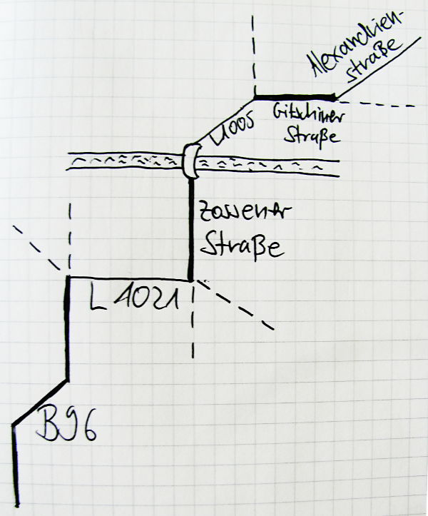
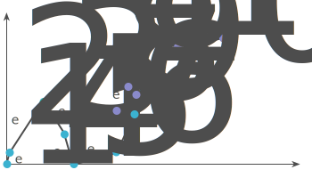
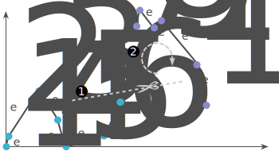
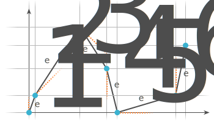
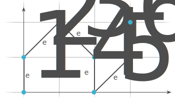
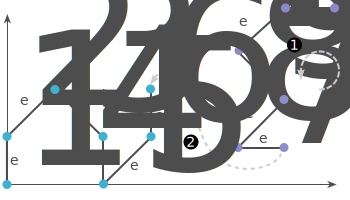

Most people already know us for our beautiful mobile friendly maps
Mapbox Directions: Expanding into routing
Powered by the brilliant Open Source Routing Machine
How did you plan a route from A to B?
↳ Look it up on a map* ↔ Ask someone
(*) possibly made from dead trees.
Solutions:
Write down a list of routing instructions

Take out Smartphone, *swipe*, *type* → Done.
For interactive routing? Sure. But does the route preview really show you relevant information?
Input path:

Split the input path into monotone sub-paths and make them x-monotone increasing.

Only certain angles are allowed for edges in a schematization.
→ Use the one that is closed.
Restriction: only change the spacing of the columns and rows of the grid.
(not always possible → find the best schematization)
 
Connect the schematized sub-paths to build the complete path.

C++ software developer? We are hiring!
mapbox.com/jobs